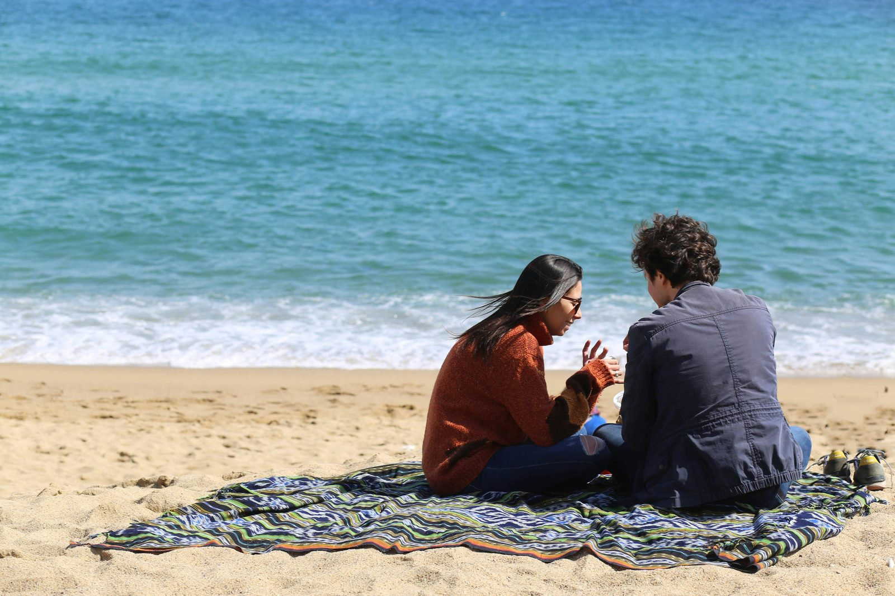

La festa di Ferragosto ha radici nell'Antica Roma, celebra l'Assunzione di Maria ed è oggi sinonimo di vacanze.
Ferragosto è una delle festività più attese e amate in Italia, rappresentando un momento di riposo e celebrazione durante l'estate. Questa festa ha origini che risalgono all'Antica Roma e si intrecciano successivamente con la tradizione cattolica.
Il nome "Ferragosto" deriva dal latino "feriae Augusti" (riposo di Augusto), in onore di Ottaviano Augusto, il primo imperatore romano, da cui prende il nome il mese di agosto. Fu lo stesso Augusto a istituire questa festività nel 18 a.C., derivandola dalla tradizione dei Consualia, feste che celebravano la fine dei lavori agricoli e onoravano Conso, il dio della terra e della fertilità per i Romani.

Durante il periodo dell'Impero Romano, Ferragosto era caratterizzato da numerosi festeggiamenti in tutto l'Impero. Si organizzavano feste e corse di cavalli, e gli animali da tiro, sollevati dai lavori nei campi, venivano adornati con fiori. Era anche consuetudine che i contadini facessero gli auguri ai proprietari terrieri, ricevendo in cambio una mancia. Originariamente, come festa pagana, Ferragosto veniva celebrata il 1° agosto, ma i giorni di riposo e festa erano molto più numerosi, estendendosi anche a tutto il mese. Il 13 agosto, in particolare, era dedicato alla dea Diana.
Con l'avvento del Cristianesimo, Ferragosto fu assimilato dalla Chiesa Cattolica attorno al VII secolo. La Chiesa iniziò a celebrare l'Assunzione di Maria il 15 agosto, festività che commemora l'ascensione della Vergine Maria al cielo sia con l'anima sia con il corpo. Questo dogma, noto come Assunzione di Maria, fu ufficialmente riconosciuto dalla Chiesa solo nel 1950.
Oggi, Ferragosto è sinonimo di vacanze, gite fuori porta e momenti di relax in famiglia. Le città italiane si svuotano e le spiagge si riempiono, con feste, fuochi d'artificio e sagre che animano la giornata. È una tradizione che unisce il passato e il presente, celebrando la cultura e la storia italiane.
fonte: Ferragosto: perché questo nome
Parole Chiave
| Ferragosto | Festa italiana del 15 agosto |
| Festa | Celebrazione, evento speciale |
| Estate | La stagione calda dell'anno |
| Antica Roma | Vecchia città e impero molto famoso in Italia |
| Tradizione | Abitudine, usanza di un popolo |
| Imperatore | Re molto potente |
| Riposo | Momento in cui non si lavora |
| Dio | Essere superiore in alcune religioni |
| Agosto | Ottavo mese dell'anno |
| Chiesa | Edificio religioso |
| Assunzione | Quando la Vergine Maria è salita al cielo |
| Celebrare | Festeggiare qualcosa di speciale |
| Vergine Maria | Madre di Gesù nella religione cristiana |
| Corpo | Parte fisica di una persona |
| Anima | Parte spirituale di una persona |
| Contadino | Persona che lavora nei campi |
| Proprietario | Persona che possiede qualcosa |
| Lavoro | Attività per guadagnare soldi |
| Fiori | Parte colorata delle piante |
| Cavallo | Animale usato per trasportare persone o cose |
Esercizio
Domande
- Da dove deriva il nome "Ferragosto" e cosa significa?
- Qual era l'origine della festa di Ferragosto nell'Antica Roma?
- Quali erano alcune delle attività e usanze durante le celebrazioni di Ferragosto nell'Impero Romano?
- In che modo la Chiesa Cattolica ha assimilato Ferragosto e quale festività ha associato a questa data?
- Come viene celebrato Ferragosto in Italia oggi?